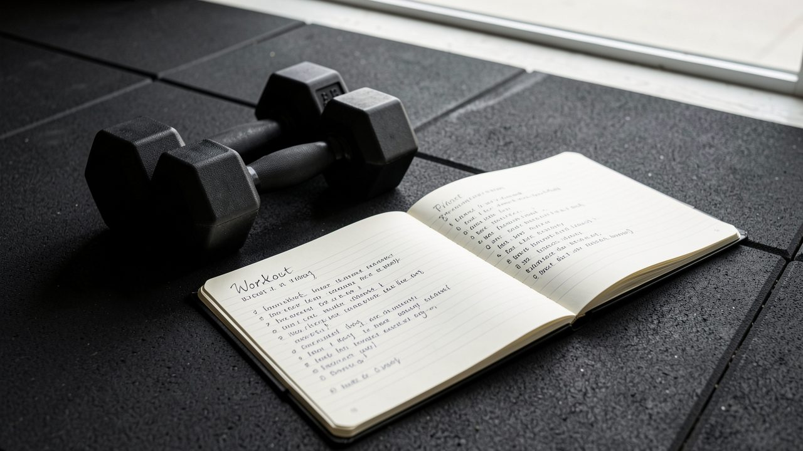

- Strona główna
- Blog
- Trening
Ile razy w tygodniu trenować, żeby schudnąć?
Więcej nie zawsze znaczy lepiej. Sprawdź, ile treningów naprawdę potrzebujesz na redukcji i jak je rozłożyć.

TreningNajczęstszy błąd na początku redukcji to rzucenie się na codzienne treningi. Przez dwa tygodnie motywacja jest ogromna, potem przychodzi zmęczenie, ból stawów i… koniec planu.
Złoty środek: 3–4 treningi siłowe
Dla większości osób najlepiej działają 3–4 treningi siłowe w tygodniu po 45–60 minut. To wystarczy, żeby utrzymać (a na początku nawet zbudować) mięśnie, podczas gdy tłuszcz spada dzięki diecie.
Gdzie w tym cardio?
Cardio to dodatek, nie podstawa. Zamiast godzin na bieżni postaw na kroki — 8–10 tysięcy dziennie robi ogromną różnicę w wydatku energii i nie obciąża regeneracji.
Najważniejsza jest regularność
Plan, który realizujesz przez 12 tygodni, zawsze wygra z idealnym planem porzuconym po dwóch. Wybierz liczbę treningów, którą utrzymasz nawet w gorszym tygodniu.